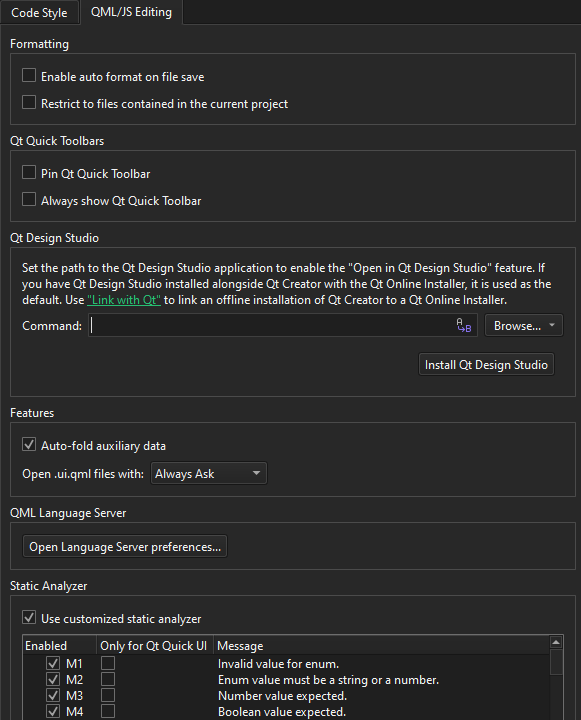
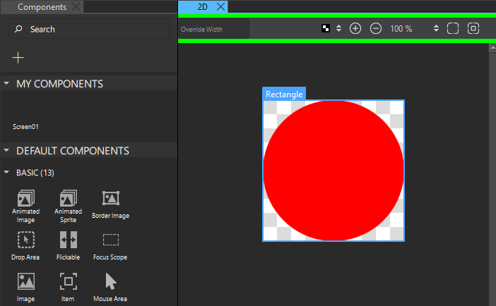

Qt Quick Designer
Use wizards to create Qt Quick projects that have boiler-plate code. Change the code in the Edit mode or use a separate visual editor, Qt Design Studio to open and edit UI files (.ui.qml).
Don't edit UI files in the Edit mode because it is easy to add code that Qt Design Studio does not support.
Opening Files in Qt Design Studio
If you installed Qt Design Studio with Qt Online Installer, and open a .ui.qml or a .qml file in Qt Creator, it asks you whether you would like to open the file in Qt Design Studio instead. Select Open in Qt Design Studio to open the file in Qt Design Studio.
To hide the question, select Do Not Show Again.
To continue editing the file in Qt Creator, close the message.
To open the UI file in Qt Design Studio later, select QDS on the editor toolbar.

Setting the Path to Qt Design Studio
If you installed Qt Design Studio using some other method than Qt Online Installer, set the path to the Qt Design Studio installation directory in Preferences > Qt Quick > QML/JS Editing > Qt Design Studio.

To use Qt Online Installer to install Qt Design Studio, select Install Qt Design Studio.
Editing Files in Qt Quick Designer
Enable the Qt Quick Designer plugin in Qt Creator for editing UI files. The functionality is restricted and not all Qt Design Studio features are supported.
To use Qt Quick Designer, switch to the Design mode when a ui.qml or .qml file is open.

For more information about Qt Qml, Qt Quick, and QML types, see the Qt reference documentation available online and in the Help mode.
For more information about using Qt Quick Designer, see Qt Design Studio documentation.
See also Create Qt Quick Applications, Create Qt Quick UI Prototypes, and Enable and disable plugins.